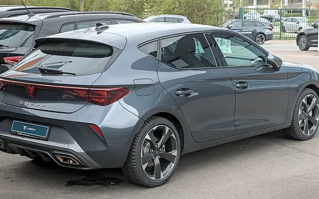

Par Motor › Precios por modelo › Cupra León
Precio de segunda mano · noviembre de 2026¿Cuánto vale un Cupra León de segunda mano?

Precio justo estimado de un Cupra León usado en España, año por año, con los kilómetros normales para su edad y en buen estado: de 19.800 € a 41.700 €. Para tasar el tuyo con sus kilómetros reales y su estado, usa el tasador gratis.
Precios del Cupra León por año
Cupra León (2020–hoy)
Precio de nuevo: 1.5 eTSI 150 CV, 32.000 € · VZ e-Hybrid (enchufable) 245 CV, 42.000 € · VZ 2.0 TSI 245 CV, 40.000 €
| Año | Km normales | 1.5 eTSI 150 CV · Gasolina | VZ e-Hybrid (enchufable) 245 CV · Híbrido enchufable | VZ 2.0 TSI 245 CV · Gasolina |
|---|---|---|---|---|
| 2026 | 5.000 km | 33.400 € | 39.400 € | 41.700 € |
| 2025 | 20.000 km | 29.200 € | 34.500 € | 36.500 € |
| 2024 | 35.000 km | 27.600 € | 32.600 € | 34.500 € |
| 2023 | 50.000 km | 26.100 € | 30.800 € | 32.600 € |
| 2022 | 65.000 km | 24.600 € | 29.100 € | 30.800 € |
| 2021 | 80.000 km | 22.300 € | 26.400 € | 27.900 € |
| 2020 | 95.000 km | 19.800 € | 23.300 € | 24.700 € |
Kilómetros normales: 15.000 al año en gasolina, híbridos y eléctricos, y 20.000 en diésel, con un máximo de 100.000 km (por encima no tasamos: el precio depende demasiado del historial de cada coche). Cifras redondeadas a 100 €.
Preguntas frecuentes
¿Cuánto vale un Cupra León de segunda mano?
Según el año, la versión y los kilómetros, un Cupra León usado vale hoy de 19.800 € a 41.700 € en España. El más barato de nuestra tabla es un 1.5 eTSI de 2020 (19.800 €) y el más caro un VZ 2.0 TSI de 2026 (41.700 €). Son precios justos estimados entre particulares y profesionales, con los kilómetros normales para su edad y en buen estado.
¿Cuánto valor pierde un Cupra León al año?
Con unos años encima, un Cupra León pierde alrededor de un 6 % de su valor cada año (calculado sobre el 1.5 eTSI de la generación Cupra León). Los primeros años la caída es mayor y a partir de los 70.000 km se acelera.
¿Qué motorizaciones tiene el Cupra León?
En nuestra base de datos hay versiones gasolina y híbrido enchufable, en 1 generación: Cupra León.
¿Cómo sé si me piden demasiado por un Cupra León?
Abre el tasador de Par Motor, elige el Cupra León, el año y los kilómetros reales, y escribe lo que te piden. Te diremos si está por debajo del precio justo (chollo) o por encima (caro). Es gratis y no pide registro ni matrícula.
Otros Cupra
Compara su coste real
El precio de compra es solo una parte. Mira cuánto te costaría al mes con combustible, seguro, neumáticos, mantenimiento y lo que pierde de valor.
Abrir el comparador →